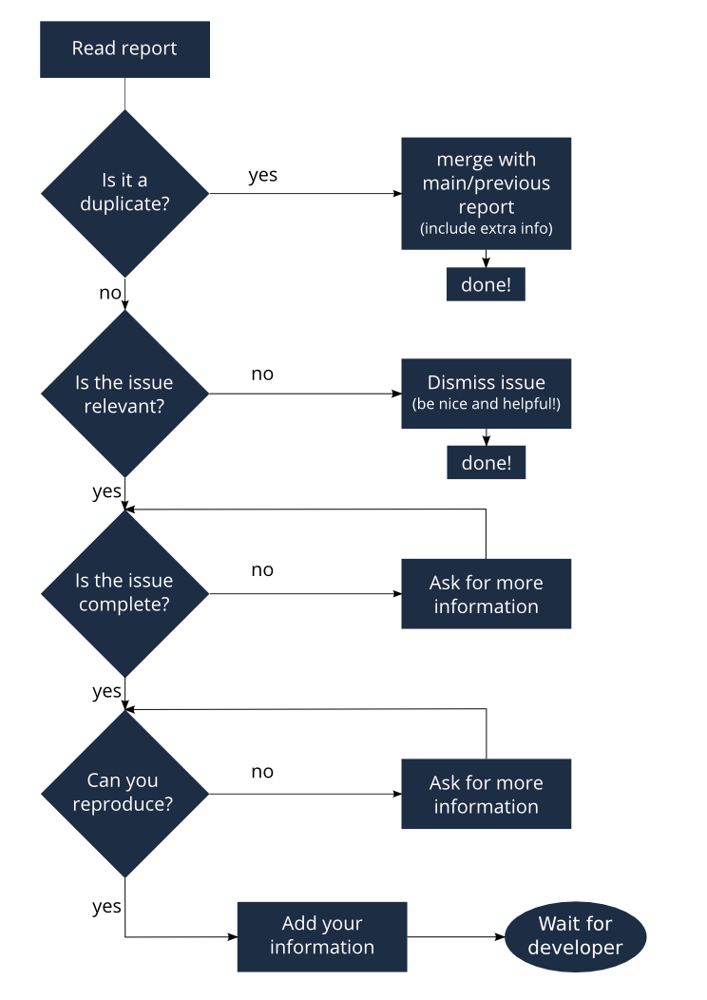

Bug Triaging
Introduction
Bug Triaging is the process of checking bug reports to see if they are still valid (the problem might be solved since the bug was reported), reproducing them when possible (to make sure it really is an ownCloud issue and not a configuration problem) and in general making sure the bug is useful for a developer who wants to fix it. If the bug is not useful and can’t be augmented by the original reporter or the triaging contributor, it has to be closed.
Why do you want to join
Helping to bring the number of issues down makes it easier for developers to spend their time productively and bug triagers thus contribute greatly to ownCloud development! Triaging a bug doesn’t take long so the work comes in small chunks and you don’t need many skills, just some patience and sometimes perseverance.
How do you triage bugs
The process of checking, reproducing and closing invalid issues is called ‘bug triaging‘. Issues can be divided in one of three kinds:
-
Bugs or feature requests which come with all needed information to allow a developer to fix or work on them
-
Incomplete or duplicate bug reports or feature requests
-
Irrelevant or wrong bug reports or feature requests
The job of a bug triager is to identify the One’s for developers to look at, help remove, merge or improve any Two to a One and dismiss Three’s in a friendly and emphatic way.
Triaging follows these steps:
-
Find an issue somebody should look at
-
Be that somebody and see if the issue content is useful for a developer
-
Reply and close, ask a question, add information or a label.
-
Find the next bug-to-be-dealt-with and repeat!
General considerations
-
You need a github account to contribute to bug triaging.
-
If you are not familiar with the github issue tracker interface (which is used by ownCloud to handle bug reports), you may find this guide useful.
-
You will initially only be able to comment on issues. The ability to close issues or assign labels will be given liberally to those who have shown to be willing and able to contribute. Just ask on IRC!
-
Read our bug reporting guidelines so you know what a good report should look like and where things belong. The issue template asks specifically for some information developers need to solve issues.
-
It might even be fixed, sometimes! It can also be fruitful to contact the developers on irc. Tell them you’re triaging bugs and share what problem you bumped into. Or just ask on the test-pilots mailing list.
-
To ensure no two people are working on the same issue, we ask you to simply add a comment like
I am triaging thisin the issue you want to work on, and when done, before or after executing the triaging actions, note similarly that you’re done.To be able to tag and close issues, you need to have access to the repository. For the core and sync app repositories this also means having signed the contributor agreement. However, this isn’t really needed for triaging as you can comment after you’re done triaging and somebody else can execute those actions.
Finding bugs to triage
Github offers several search queries which can be useful to find a list of bugs which deserve a closer look:
But there are more methods. For example, if you are a user of ownCloud with a specific setup which uses Apache as the webserver, Dropbox as storage, or uses the encryption app, you could look for bugs with these keywords. You can then use your knowledge of your installation and your installation itself to see if bugs are (still) valid or reproduce them.
Once you have picked an issue, add a comment that you’ve started triaging:
I am triaging this bug
Checking if the issue is useful
Much content from Guidelines and HOWTOs/Bug triaging
The goal of triaging is to have only useful bug reports for the developers. And you don’t have to know much to be able to judge at least some bug reports to be less than useful. There are duplications, incomplete reports and so on. Here is the work flow for each bug:

Let’s go over each step.
Finding duplicates
To find duplicates, the search tool in github is your first stop. In this screen you can easily search for a few keywords from the bug report. If you find other bugs with the same content, decide what the best bug report is (often the oldest or the one where one or more developers have already started to engage and discuss the problem). That is the `master' bug report, you can now close the other one (or comment that it can be closed as duplicate).
If the bug report you were reviewing contains additional information, you can add that information to the `master' bug report in a comment. Mention this bug report (using #<bug report number>) so a developer can look up the original, closed, report and perhaps ask the initial reporter there for additional information.
If you can’t find anything, look in closed bug reports. The problem
might be solved already and be listed there! Of course, these other bug
reports might be closed as duplicates of the one you are looking at now
- if you can’t find one that is solved nor can find any duplicates, you
can move on to the next step. If you are unsure, just add a comment:
might be a duplicate of #<bug nr here> will usually suffice.
When the issue is a feature request, you can be helpful in the same way: merge related requests by adding information of one to the other and closing the first.
Be polite: when you need to request information or feedback be clear and polite, and you will get more information in less time. Think about how you’d like to be treated, were you to report a bug!
You can answer more quickly and friendly using one of these templates.
Often our github issue tracker is a place for discussions about solutions. Be friendly, inclusive and respect other people’s position.
Determining relevance of issue
Not all issues are relevant for ownCloud. Bugs can be due to a specific configuration or unsupported platforms. Raspberry Pi’s suffer from SQLite time-outs, NGINX has problems which Apache doesn’t, and Microsoft Server with IIS is not well supported. While external issues are not always a reason to close a report, be sure that they are clear: does the user use the `standard' platform? Ask for information if this is missing.
Last but not least, the problem might be due to the user doing something that simply does not work. Your general ownCloud knowledge might be helpful here - if this is the case, you can often swiftly close the issue with a comment about what went wrong.
You might have to say no to some requests, for example when a problem has been solved in a new release but won’t become available for the release the reporter is using; or when a solution has been chosen which the reporter is unhappy about. Be considerate. People feel surprisingly strong about ownCloud, and you should take care to explain that we don’t aim to ignore them; on the contrary. But sometimes, decisions which benefit the majority of users don’t help an individual. The extensibility and open availability of the code of ownCloud is here to relieve the pain of such decisions.
Determining if the report is complete
Now that you know that the bug report is unique, and that is not an external issue, you need to check all the needed information is there.
Check our bug reporting guidelines and make sure bug reports comply with it! The information asked in the issue template is needed for developers to solve issues.
Once you added a request for more information, add a #needinfo tag.
If there has been a request for more information on the report, either by you, a developer or somebody else, but the original reporter (or somebody else who might have the answer) has not responded for 1 month or longer, you can close the issue. Be polite and note that whoever can answer the question can re-open the issue!
Reproducing the issue
An important step of bug triaging is trying to reproduce the bugs, this means, using the information the reporters added to the bug report to force (recreate, reproduce, repeat) the bug in the application.
This is needed in order to differentiate random/race condition bugs of reproducible ones (which may be reproduced by developers too; and they can fix them).
To reproduce an issue, please refer to our testing documents.
If you can’t reproduce an issue in a newer version of ownCloud, it is most likely fixed and can be closed. Comment that you failed to reproduce the problem, and if the reporter can confirm (or doesn’t respond for a long time), you can close the issue. Also, be sure to add what exactly you tested with - the ownCloud Master or a branch (and if so, when), or did you use a release, and if so - what version?
Finalizing and tagging
Once you are done reproducing an issue, it is time to finish up and make clear to the developers what they can do:
-
If it is a genuine bug (or you are pretty sure it is) add the `Bug' tag.
-
If it is a genuine feature request (or you are pretty sure it is) add the `enhancement' tag.
-
If the issue is clearly related to something specific, @mention a maintainer. examples: @schiesbn for encryption, @blizzz for LDAP, @PVince81 for quota stuff… You can find a list of maintainers here.
Now, the developers can pick the issue up. Note that while we wish we would always pick up and solve problems promptly, not all areas of ownCloud get the same amount of attention and contribution, so this can occasionally take a long time.
Collaboration
You can just get started with bug triaging.
You can also join the '#owncloud-testing' channel on irc://freenode.net and https://webchat.freenode.net/, to ask questions but keep in mind that people aren’t active 24/7, and it can occasionally take a while to get a response. Last, but not least, ownCloud contributor Jan Borchardt has a great guide for developers and triagers about dealing with issues, including some 'stock answers' and thoughts on how to deal with pull requests.
For further questions or help you can also send a mail to:
-
X (IRC: Y)
We are looking forward to working with you!
Credit: this document is in debt to the extensive KDE guide to bug triaging.